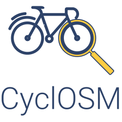

<!DOCTYPE html>
<html><head>
<meta http-equiv="content-type" content="text/html; charset=UTF-8">
        <meta charset="utf-8">
        <meta name=viewport content="width=device-width,initial-scale=1,maximum-scale=1,user-scalable=0">
        <meta name=description content="A bicycle-oriented map for every cyclist, based on OpenStreetMap data.">
        <meta name=twitter:card content="summary">
        <meta property=og:type content="website">
        <meta property=og:title content="CyclOSM">
        <meta property=og:description content="A bicycle-oriented map for every cyclist, based on OpenStreetMap data.">
        <meta property=og:url content="https://cyclosm.org/">
        <meta property=og:image content="./images/social_media.png">

        <link rel="icon" type="image/png" sizes="16x16" href="./images/favicon-16.png">
        <link rel="icon" type="image/png" sizes="228x228" href="./images/favicon-228.png">
        <link rel="icon" type="image/png" sizes="32x32" href="./images/favicon-32.png">
        <link rel="shortcut icon" href="./images/favicon.ico">

        <title>CyclOSM: OpenStreetMap-based bicycle map</title>

        <link rel="stylesheet" href="css/leaflet.css">
        <link rel="stylesheet" href="css/Control.Geocoder.css">
        <link rel="stylesheet" href="css/easy-button.css">
        <link rel="stylesheet" href="css/L.Control.Locate.min.css">
        <link rel="stylesheet" href="css/fa-all.min.css">
        <link rel="stylesheet" href="css/tingle.min.css">
        <style type="text/css">
            @font-face {
                font-family: 'Roboto';
                font-style: normal;
                font-weight: 400;
                src: url('/webfonts/roboto-v20-latin-regular.eot'); /* IE9 Compat Modes */
                src: local('Roboto'), local('Roboto-Regular'),
                url('/webfonts/roboto-v20-latin-regular.eot?#iefix') format('embedded-opentype'), /* IE6-IE8 */
                url('/webfonts/roboto-v20-latin-regular.woff2') format('woff2'), /* Super Modern Browsers */
                url('/webfonts/roboto-v20-latin-regular.woff') format('woff'), /* Modern Browsers */
                url('/webfonts/roboto-v20-latin-regular.ttf') format('truetype'), /* Safari, Android, iOS */
                url('/webfonts/roboto-v20-latin-regular.svg#Roboto') format('svg'); /* Legacy iOS */
            }

            html {
                min-height: 100%;
                position: relative;
                font-family: Roboto, sans-serif;
            }

            body {
                margin: 0;
                width: 100%;
                height: 100%;
                text-align: justify;
                font-size: 14px;
            }

            p {
                text-indent: 2em;
            }

            div#map {
                position: absolute;
                top: 0;
                bottom: 0;
                left: 0;
                right: 0;
            }

            .tingle-modal {
                z-index: 2000;
                color: #2e4369;
            }

            .tingle-modal a, .tingle-modal a:visited {
                color: #2e4369;
            }

            .tingle-modal__close {
                background-color: #2e4369;
            }

            .center {
                text-align: center;
            }

            .footnote {
                font-size: 0.9em;
            }
        </style>
    </head>
    <body>
        <div id="map"></div>

        <script src="js/leaflet.js"></script>
        <script src="js/leaflet-fullHash.js"></script>
        <script src="js/Control.Geocoder.js"></script>
        <script src="js/easy-button.js"></script>
        <script src="js/L.Control.Locate.js"></script>
        <script src="js/leaflet.restoreview.js"></script>
        <script src="js/tingle.min.js"></script>
        <script type="text/javascript">
            function storageAvailable(type) {
                try {
                    var storage = window[type],
                        x = '__storage_test__';
                    storage.setItem(x, x);
                    storage.removeItem(x);
                    return true;
                }
                catch(e) {
                    console.warn("Your browser blocks access to " + type);
                    return false;
                }
            }

            function shouldShowModalOnStartup () {
                if (!storageAvailable('localStorage')) {
                    return false;
                }
                return !window.localStorage['wasModalShown'];
            }

            document.addEventListener('DOMContentLoaded', function () {
                var modal = new tingle.modal({
                    footer: false,
                    closeMethods: ['overlay', 'button', 'escape'],
                    closeLabel: "Close",
                });
                modal.setContent('<h1 class="center">CyclOSM: OpenStreetMap-based bicycle map</h1><p><a href="https://github.com/cyclosm/cyclosm-cartocss-style/">CyclOSM</a> is a bicycle-oriented map built on top of <a href="https://www.openstreetmap.org/">OpenStreetMap</a> data. It aims at providing a beautiful and practical map for cyclists, no matter their cycling habits or abilities.</p><p>In urban areas, it renders the main different types of cycle tracks and lanes, on each side of the road, for helping you draw your bike to work route. It also features essential POIs as well as bicycle parking spots or spots shared with motorbikes, specific infrastructure (elevators / ramps), road speeds or surfaces to avoid streets with pavings, bumpers and bike boxes, etc.</p><p>The same map also lets you visualize main bicycle touring routes as well as essential POIs when touring (emergency services, shelters, tourism, shops).</p><p>A detailed legend is available <a href="legend.html" target="_blank">here</a>.</p><p class="center"></p><h2 class="center">Let\'s start exploring the map!</h2><p class="footnote">CyclOSM is built on open-source and free software. The source code is available at <a href="https://github.com/cyclosm/cyclosm-cartocss-style/">CyclOSM</a> and we welcome <a href="https://github.com/cyclosm/cyclosm-cartocss-style/blob/master/CONTRIBUTING.md">contributions</a>!. The tile server hosting this demonstration is provided by <a href="https://www.openstreetmap.fr">OpenStreetMap-France</a>, many thanks to them for their support!</p><p class="footnote">Note that this information screen will only be shown once. In the future, you can show it again at anytime by clicking the information icon on the map.</p>');
                if (shouldShowModalOnStartup()) {
                    modal.open();

                    if (storageAvailable('localStorage')) {
                        window.localStorage['wasModalShown'] = true;
                    }
                }

                // Available tiles definition
                var cyclosm = L.tileLayer('https://dev.{s}.tile.openstreetmap.fr/cyclosm/{z}/{x}/{y}.png', {
                    attribution: 'Map data &copy; <a href="https://www.openstreetmap.org/">OpenStreetMap</a> contributors',
                    minZoom: 0,
                    maxZoom: 18,
                });
                var osm = L.tileLayer('https://{s}.tile.openstreetmap.org/{z}/{x}/{y}.png', {
                    attribution: 'Map data &copy; <a href="https://www.openstreetmap.org/">OpenStreetMap</a> contributors',
                    minZoom: 0,
                    maxZoom: 18,
                });
                var ocm = L.tileLayer('https://tile.thunderforest.com/cycle/{z}/{x}/{y}.png', {
                    attribution: 'Map data &copy; <a href="https://www.openstreetmap.org/">OpenStreetMap</a> contributors',
                    minZoom: 0,
                    maxZoom: 18,
                });
                var otm = L.tileLayer('https://{s}.tile.opentopomap.org/{z}/{x}/{y}.png', {
                    attribution: 'Map data &copy; <a href="https://www.openstreetmap.org/">OpenStreetMap</a> contributors',
                    minZoom: 0,
                    maxZoom: 18,
                });
                var waymarked_trails = L.tileLayer('https://tile.waymarkedtrails.org/cycling/{z}/{x}/{y}.png', {
                    attribution: '<a href="Trails">https://cycling.waymarkedtrails.org/</a>',
                    minZoom: 0,
                    maxZoom: 18,
                });
                var map = new L.Map('map', {
                    zoomControl: true, layers: [cyclosm]
                });
                if (!map.restoreView()) {
                    // Default view on Amsterdam
                    map.setView([52.3727598, 4.8936041], 12);
                }

                // Set up layers control
                var baseMaps = {
                    "CyclOSM": cyclosm,
                    "OpenStreetMap.org": osm,
                    "OpenCycleMap": ocm,
                    "OpenTopoMap": otm,
                };
                var overlayMaps = {
                    "Waymarked Trails": waymarked_trails,
                };
                L.control.layers(baseMaps, overlayMaps, { collapsed: false }).addTo(map);

                // Set up hash plugin
                var allMapLayers = {
                    'cyclosm': cyclosm,
                    'openstreetmap': osm,
                    'opencyclemap': ocm,
                    'opentopomap': otm,
                    'waymarkedtrails': waymarked_trails,
                };
                L.hash(map, allMapLayers);

                // Set up geocoder plugin
                var geocoder = L.Control.geocoder({
                    defaultMarkGeocode: false,
                    position: 'topleft'
                });
                geocoder.on('markgeocode', function(e) {
                    map.fitBounds(e.geocode.bbox);
                })
                geocoder.addTo(map);

                // Set up geolocation plugin
                L.control.locate().addTo(map);

                // Set up help / legend buttons
                L.easyButton('fa-question', function(btn, map) {
                    window.open('legend.html', '_blank');
                }).addTo(map);
                L.easyButton('fa-info', function(btn, map) {
                    modal.open();
                }).addTo(map);
            });
        </script>
    </body>
</html>
